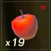
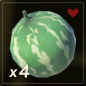
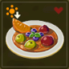

Boas vindas à Estadia Hyrule. Eu e, minha amiga, Zi criamos este site para que você não tenha dificuldades nos preparos de comidas e elixires que irão lhe auxiliar durante sua missão para eliminar, de uma vez por todas, o Ganon Calamidade.
Decidimos criar este site após criarmos um grupo duo no WhatsApp com as receitas do jogo, e pensamos:"E se criarmos um sitezíneo para ajudarmos jogadores novatos ou que não exploraram muito?" E, então, formulamos o conceito do site após muita conversa e o concretizamos para que vocês tenham o máximo de material possível.
Aqui você encontrará inúmeras receitas, sejam elas de comidas ou de elixires. Além disso, você poderá ler notas adicionais informando sobre a possibilidade de aumento de Efeito e Duração do que você produzir.
Comidas são essenciais em Breath of the Wild. Não pelo fato do personagem Link necessitar se alimentar, o que seria uma imersão interessante ao jogo como um RPG geral, mas pelo fato de comidas proverem uma Cura para corações perdidos. Além disso, Cura não é o único efeito provido por Comidas. Você pode comer uma comida crua ou cozinhá-la em uma panela no fogo de uma fogueira. Fazendo isso, você pode combinar sabores e efeitos.
Abaixo vocês podem ver o que Comidas podem fazer por Link em Breath of the Wild:
Podemos usar como exemplo uma Maçã e um Hidromelão para fazermos um prato.
Maçã |
Hidromelão |
|  Uma fruta comum encontrada em árvores por toda Hyrule. Coma-a crua, ou cozinhe-a para aumentar seu efeito. |
 Esta fruta resistente pode florescer até mesmo no calor do deserto. O líquido hidratante interno providencia um efeito refrescante que, quando cozido, aumenta sua resistência a calor. |
Você pode notar que, no ícone da Maçã e do Hidromelão, há corações. Eles indicam que este alimento tem poder de Cura. Vamos, então, cozinhá-los em uma panela ao fogo.
Após alguns segundos nós obtemos o seguinte alimento preparado:
Cozido de Frutas Refrescantes |
| 
Garante baixa resistência a calor. Este doce prato é feito ao cortar frutas deliciosas em uma panela e cozinhá-las até sua maciez. |
No caso do Cozido de Frutas Refrescantes você se cura em 2 Corações perdidos e recebe 3 minutos e Baixa Resistência a Calor .
A Resistência a Calor é indicada por um ícone em formato de Sol com uma seta que aponta para baixo. Isso significa que, em ambientes muito quentes, você pode não receber dano por exposição ao calor.
Agora, seria possível aumentar a duração ou a potência do efeito? E se adicionássemos, ao nosso prato, apenas 1 Maçã e todos os 4 Hidromelões em nossa posse? Vamos experimentar!
Cozido de Frutas Refrescantes |
|
Garante baixa resistência a calor. Este doce prato é feito ao cortar frutas deliciosas em uma panela e cozinhá-las até sua maciez. |
Como podem ver, utilizar 4 Hidromelões pode não ter aumentado a potência da Resistência a Calor, mas aumentou demais sua duração. Tenha isso em mente enquanto se aventura por ambientes hostis em termos de temperatura. Se você julgar necessário, use mais ingredientes com efeitos adicionais para aumentar sua potência e/ou duração. A Cura provida por este prato também é maior, já que utilizou todos os 5 ingredientes possíveis que Link pode carregar e cozinhar.
AGORA, E SE UTILIZÁSSEMOS 5 HIDROMELÕES?
Cozido de Frutas Refrescantes |
|
Garante baixa resistência a calor. Este doce prato é feito ao cortar frutas deliciosas em uma panela e cozinhá-las até sua maciez. |
Como podem ter imaginado, se a quantidade de Hidromelões aumenta a duração então utilizar os 5 irá providenciar a duração máxima da Resistência a Calor.
Não se esqueça de ler as descrições dos ingredientes e alimentos que você obter!
Elixires são, consideravelmente, opcionais. Diferente de Comida, os Elixires são focados em oferecer efeitos temporários adicionais mais do que Cura de corações. Elixires são feitos utilizando restos de monstros derrotados.
Caso tenha alguma dúvida, sugestão ou crítica, por favor entre em contato conosco. Ou deixe uma mensagem abaixo.
E-Mail para Contato: estadiahyrule@email.com